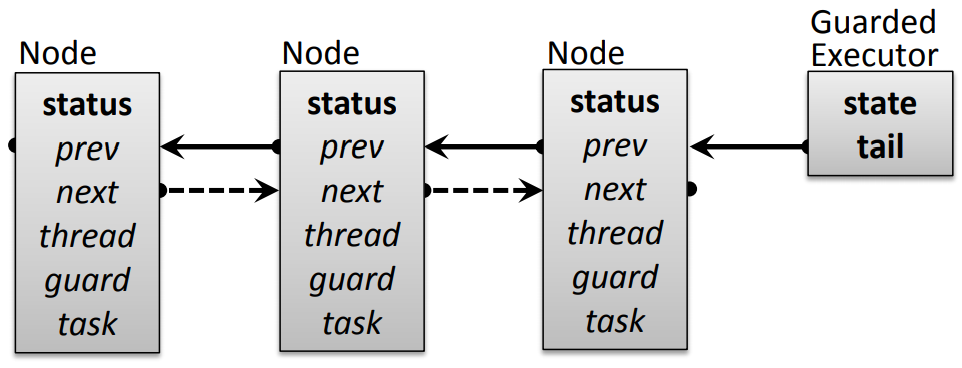
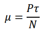
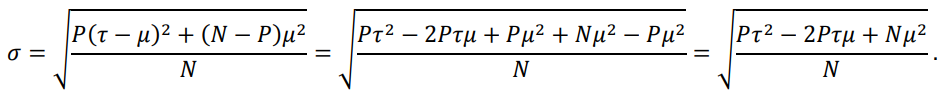
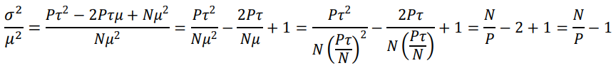
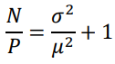
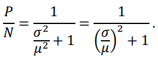

Justin T. Sampson <justin@krasama.com>
GuardedExecutor is a high-performance implicit-signalling monitor implementation for Java 8+. This document provides a brief overview of its design.
The essence of the GuardedExecutor interface starts with the standard Executor interface:
void execute(Runnable task)
It then adds a “guarded” form of the same method:
void executeWhen(BooleanSupplier guard, Runnable task)
Both methods acquire an exclusive lock, encapsulated within the executor, and then execute the given task before releasing the lock and returning. The guarded form additionally waits until the guard becomes satisfied before executing the task.
Additional methods appear in the interface to provide a variety of options regarding interruptibility, timeouts, and returning a value by giving a Supplier rather than a Runnable. Even execute(task) is semantically equivalent to executeWhen(() -> true, task), so the design can be understood by focusing only on the executeWhen method.
Besides its interface being more programmer-friendly, GuardedExecutor turns out to have several performance benefits as well.
The key to GuardedExecutor’s robustness under high contention is that any thread might execute the tasks of other threads, which reduces the amount of task switching required. The executor contains a single, unified queue, in which every node holds both the guard and the task submitted by a waiting thread. This queue is managed in a strictly sequential order: The task that is executed at any moment is the earliest task in the queue that has a currently-satisfied guard.
Additional benefits of a unified queue include:
synchronized or ReentrantLock, a thread must first block to acquire the lock, then awaken when the lock is available, and then evaluate its guard, and then block again if the guard evaluated as false. With GuardedExecutor, a thread will often block just a single time and find its task already executed when it awakens.synchronized or ReentrantLock, a thread that encounters a timeout or interrupt must reacquire the lock before continuing, which is itself an untimed and uninterruptible action. With GuardedExecutor, such a thread continues immediately without blocking again.GuardedExecutor actually prefers to let the most recent thread in the queue acquire the lock, including letting a newly-arrived thread “barge” the lock without first being added to the queue, because it will then be responsible for executing all eligible tasks before its own task in the queue. This maximizes the number of tasks executed per context switch, and therefore minimizes the number of context switches required for a given level of throughput, while at the same time maintaining perfect fairness. A thread never executes tasks after its own task in the queue, which is another factor in maintaining fairness—one thread cannot become stuck doing all of the executor’s work.
Because of this bias toward the last thread in the queue, the implementation of the queue itself can be extremely simple. New nodes are added to the queue by atomically updating the tail pointer, and whenever one thread releases the lock it simply unparks the thread currently at the tail.
In this diagram, bold names are volatile fields and italic names are non-volatile fields. Notice that most of the Node class’s fields are non-volatile. The implementation is coded carefully to minimize volatile accesses. There are some racy accesses, which are nonetheless correct due to causality. Every volatile field is only accessed in a volatile (never racy) manner, and every non-volatile field is only accessed in a non-volatile (sometimes racy) manner.
The state field is initially 0. To acquire the lock, a thread must successfully compare-and-set its value from 0 to 1. To release the lock, its value is reset to 0 with a volatile write.
The tail field is initially null. Thereafter it is only ever set to a non-null value using compare-and-set. While nodes may be removed from within the queue once they are cancelled or executed, a node is never removed while it is at the tail itself. Therefore the tail field moves strictly forward.
A node’s status field is initially 0 (a.k.a. WAITING) and follows these possible transitions:
All of the Node class’s other fields are non-volatile, but they are initialized before the node is added to the queue, so their initial visibility piggy-backs on the volatile write to tail.
Once initialized, prev is only ever modified by a thread holding the lock, and only to point to another node earlier in the queue (or null). Therefore, whenever it is read by a thread that is not holding the lock, the read is racy but still safe as long as that thread is traversing the queue starting from a volatile read of tail. Such a volatile read of tail ensures that the initial values of the tail node and all earlier nodes are safely visible. Since any given read of any such node’s prev field, even if racy, can only possibly point to some node earlier in the queue, the traversal always goes in the right direction and always visits nodes that are safely visible to the thread doing the traversal.
The next field is purely for temporary bookkeeping done by a thread that is executing tasks for other threads on the queue. Since that requires holding the lock, it is never subject to races.
The thread and guard fields are only modified by nulling them out when cancelling or executing the node. Therefore a racy read will only ever see the initial value or null. Several monitoring methods read thread in a racy manner, which is safe as long as they check for null; seeing null implies, causally, that the node has been, or is being, cancelled or executed already, even though there is no guaranteed ordering between a read of thread and a read of status. The guard field can be null initially, which means that seeing null does not imply that the node has been cancelled or executed already; but the only place that it is read is robust to this fact.
Finally, the task field is never actually accessed in a racy manner. It serves double duty, holding the task object before it is executed and then holding the result returned by the task after it is executed until it is consumed. It is only read by a thread that is about to execute another thread’s task or by a thread whose task has been executed by another thread. It is only written in those same scenarios or by a thread that is cancelling its node, which can only happen if it is definitely not being executed. The visibility of the result of such an execution piggy-backs on a volatile write of status (to either RETURNED or THREW).
I’m interested in comparing both the throughput and the fairness of GuardedExecutor as compared to ReentrantLock in steady-state execution, not simply the time to complete some number of operations. To that end, I have developed a performance testing framework that, for each of a variety of scenarios, starts up some number of threads and samples each thread’s throughput over a fixed duration. For example, a single trial may run for 2s divided into 10 samples of 200ms each.
The scenarios being tested are combinations of the following variables, with multiple trials per scenario, and with trials across all scenarios shuffled together randomly:
synchronized vs. ReentrantLock (fair and non-fair) vs. Guava’s Monitor (fair and non-fair) vs. GuardedExecutor(A “baseline” test subject, which just updates an AtomicLong rather than implementing an actual lock, is run through the same performance testing framework, and is included in the report alongside GuardedExecutor et al., as a sanity check.)
Each test thread counts the number of operations that it has performed, and periodically (say, every 100 operations) writes that count to a volatile field dedicated to that thread. The main thread reads the volatile counter for each test thread at the start and end of every sample period, and records the throughput for that thread in that sample as the delta of its counter divided by the duration of the sample. The test threads are allowed to run for a warmup period before the first sample is measured, and run continuously until after the last sample is measured in order to simulate steady-state execution.
A trial with T test threads and S sample periods therefore produces N = TS total measurements. The mean μ of those measurements represents the average throughput per thread, and therefore the throughput for the trial as a whole is reported as Tμ.
To assess the fairness of each implementation, it is not enough to simply describe the logical fairness of their designs. A default ReentrantLock usually lets threads acquire the lock in the order that they are added to the queue, but occasionally allows threads to “barge” the lock for the sake of increased throughput, whereas a “fair” ReentrantLock ensures that threads acquire the lock in the order that they are added to the queue—but even a “fair” ReentrantLock loses track of a thread’s place in the queue when it awaits a condition. GuardedExecutor goes further, maintaining the order of tasks in the queue regardless of whether each task has a guard or not, and thus is a priori the fairest of the three. However, in a running system under heavy load, individual threads may become so starved for processor time that they don’t even have a chance to get added to the queue, regardless of lock implementation. Therefore, it is necessary to measure effective fairness empirically.
One obvious way to report fairness is the standard deviation σ of the throughput measurements. Since the standard deviation will naturally be larger for trials with higher throughput, one improvement is to instead use the coefficient of variation σ ⁄ μ. Still, I found it hard to get an intuitive grasp of the relative significance of different coefficients of variation, since, like standard deviations, they range from a best case of 0 to a worst case of ∞. What I really want to see is the proportion of threads that are making progress, which should range from a worst case of 0% to a best case of 100%.
To that end, imagine a simplified scenario in which P of the N total measurements show threads making equal progress with throughput τ and the remaining N − P measurements show threads making no progress with throughput 0. Then we have
and
Therefore,
and finally
and
Since P ⁄ N is the proportion being sought, this equation suggests the definition of effective fairness as 1 ⁄ ((σ ⁄ μ)2 + 1), which is easy to calculate from the coefficient of variation σ ⁄ μ even when the measurements are not so uniform.
GuardedExecutor has slightly larger constant overhead per operation than ReentrantLock, which shows up in all of the 1-thread scenarios with very small workloads. That is probably due partly to GuardedExecutor’s indirection through lambdas and partly to ReentrantLock’s use of non-standard internal APIs of the JVM, though when I have attempted to control for those differences the results have been inconclusive. In both classes, uncontended locking basically comes down to a single compare-and-set to acquire the lock and a single volatile write to release it, so any overhead differences may very well just be differences of coding style and compiler optimization. In any case, the differences are small enough that they disappear with larger workloads and under contention with multiple threads.
Remember that GuardedExecutor is a priori fairer than either a fair or a non-fair ReentrantLock. The empirical results are consistent with that expectation, with GuardedExecutor showing near-100% effective fairness in every single scenario. What may be surprising is that a “fair” ReentrantLock does not show consistently higher effective fairness than a “non-fair” one! Both of them tend to suffer in producer/consumer scenarios under contention, with their effective fairness sometimes dropping below 50%. In several scenarios, the “non-fair” version actually does quite a bit better than the “fair” version. Perhaps the non-fair implementation supports better CPU utilization overall, which lets all threads make more progress.
Even though a “fair” ReentrantLock is not consistently fairer than a “non-fair” one, it is consistently slower, except in the lowest-contention scenarios. It turns out that a “fair” ReentrantLock is also consistently slower than a GuardedExecutor, again except in the lowest-contention scenarios. Therefore it appears that GuardedExecutor is the superior choice for any use cases that care primarily about fairness.
Finally, a “non-fair” ReentrantLock offers higher throughput than a GuardedExecutor only without contention or in simple locking scenarios. In producer/consumer scenarios with even light contention, GuardedExecutor is the clear winner. GuardedExecutor’s ability to handle increasing load gracefully by having threads execute tasks for each other means that its performance is more robust overall.
Along the way to the current GuardedExecutor design described above, I’ve also experimented with some alternative design choices. The design that I’ve arrived at is not necessarily the strongest in every single scenario, but is the most robust overall and therefore seems to be the best design to move forward into peer review and official release.
Executing tasks in the caller thread: This was my starting point, essentially taking the ideas from Guava’s Monitor and reimplementing from the ground up instead of wrapping a ReentrantLock as Monitor does. This design had a bit higher throughput in low- contention scenarios, but was less robust under high contention. Its queue structure and signalling logic were actually more complicated as well, since it attempted to find the next thread having a satisfied guard rather than simply unparking the latest thread as the current implementation does. This implementation also allowed barging to improve throughput, so tasks were not always processed strictly in queue order.
Executing tasks in a dedicated thread: This implementation was intended to be the “fair” version of the first implementation, by executing all tasks strictly in queue order. That was accomplished by having a single dedicated thread that did nothing but execute such tasks. The effective fairness of this design was nearly perfect. Interestingly, its throughput was extremely consistent: No matter how many threads were submitting tasks, it maintained a near-constant throughput. For large numbers of threads, that actually made this design the throughput leader. Unfortunately, for small numbers of threads that same property made it much slower than the other options. Also, properly maintaining a dedicated thread would have required expanding the API to support thread factories and shutdown semantics.
The experience of implementing those first two design choices strongly suggested the current GuardedExecutor design. Under low contention, tasks are almost always executed in the caller thread, while under high contention, tasks are almost always executed in batches. This achieves the best properties of both approaches: near-perfect fairness and robust throughput under contention.